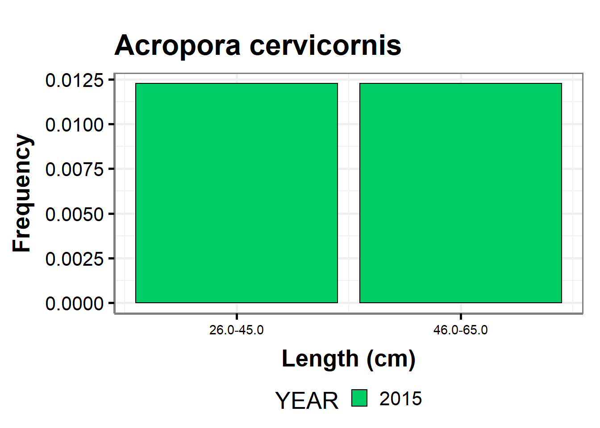
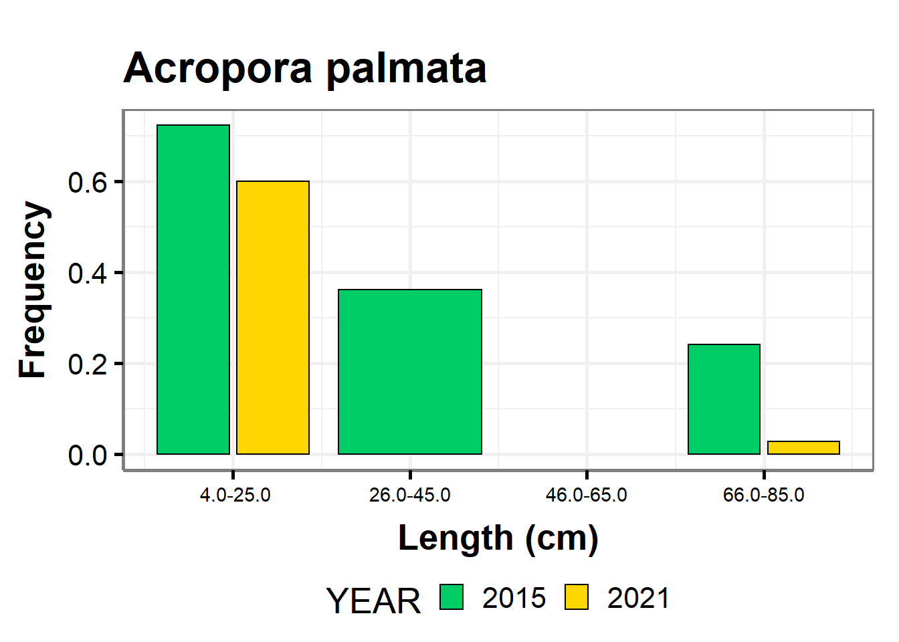
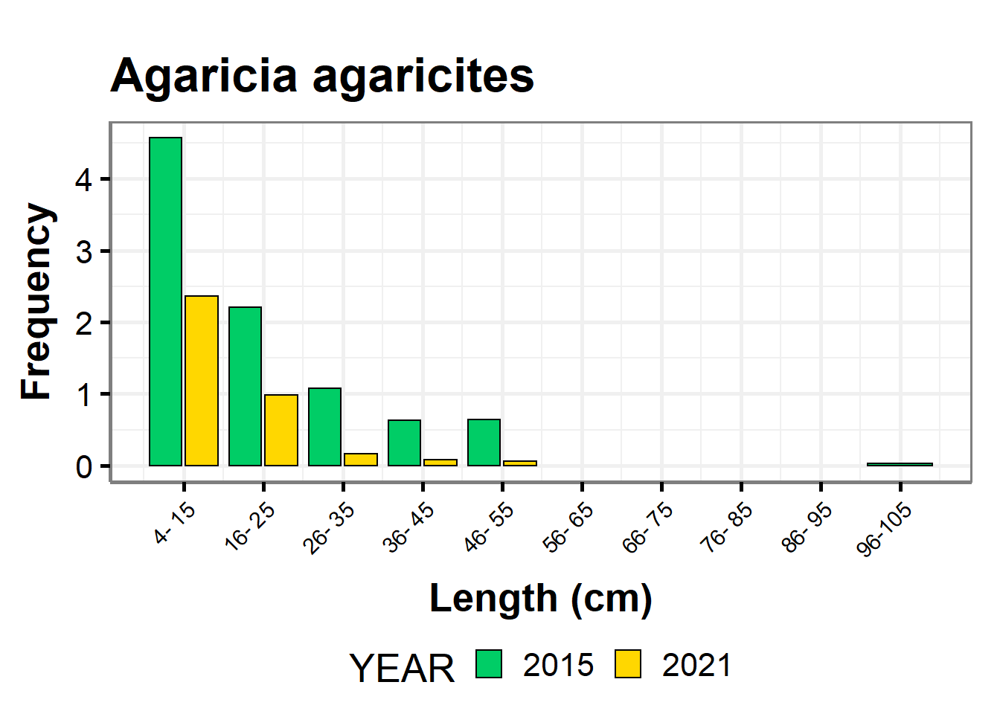
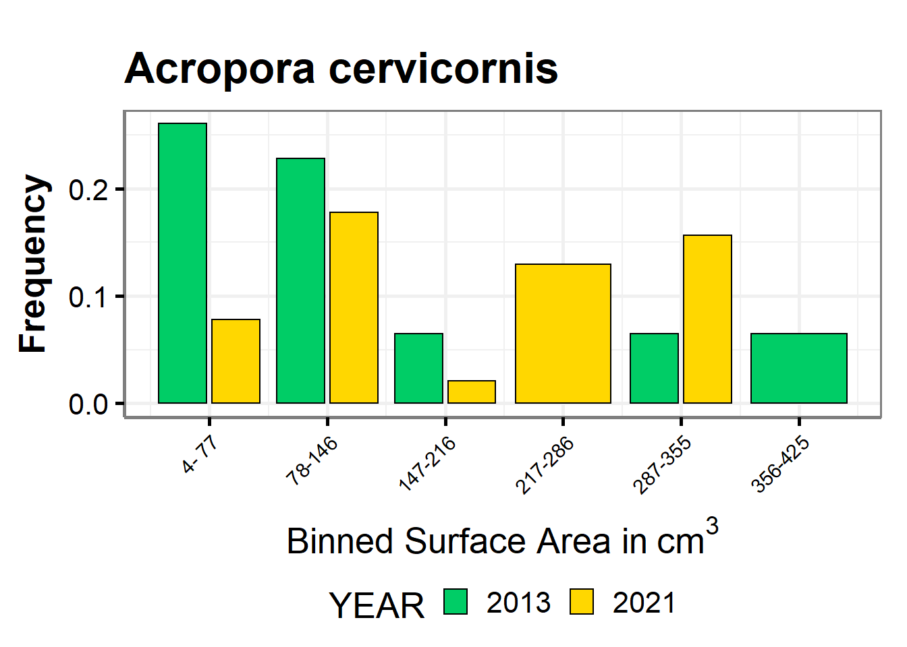
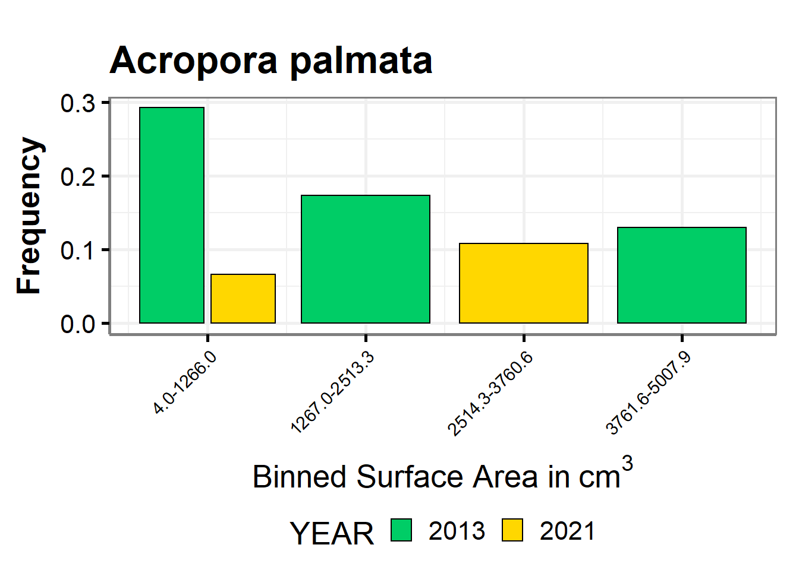

Histograms
Packages
Click ‘code’ to view…………………………………………………………………………………………………………………………………..
## Initialize
# LIBRARIES
library(dplyr)
library(ncrmp.benthics.analysis)
library(magrittr)
library(ggplot2)
library(gridExtra)
library(cowplot)
library(viridis)
library(rcartocolor)
library(sp)
# Support functions
source("theme_publication.R")
source("labeler.R")Load data
Click ‘code’ to view…………………………………………………………………………………………………………………………………..
# YEAR DEPENDENT Objects (update as appropriate)
## Variables
samp_year <- max(ncrmp.benthics.analysis::USVI_2021_NTOT$YEAR)
current_year <- 2022
## Tables/Data frames
### Cover
STTSTJ_Cvr <- NCRMP_STTSTJ_2013_21_cover_region
STX_Cvr <- NCRMP_STX_2015_21_cover_region
PR_Cvr <- NCRMP_PRICO_2014_21_cover_region
# Density
STTSTJ_den <- NCRMP_STTSTJ_2013_21_density_region
STX_den <- NCRMP_STX_2015_21_density_region
PR_den <- NCRMP_PRICO_2014_21_density_region
# Old Mortality
STTSTJ_om <- NCRMP_STTSTJ_2013_21_old_mort_region
STX_om <- NCRMP_STX_2015_21_old_mort_region
PR_om <- NCRMP_PRICO_2014_21_old_mort_region
# Recent Mortality
STTSTJ_rm <- NCRMP_STTSTJ_2013_21_rec_mort_region
STX_rm <- NCRMP_STX_2015_21_rec_mort_region
PR_rm <- NCRMP_PRICO_2014_21_rec_mort_region
# Surface Area
STTSTJ_s <- NCRMP_STTSTJ_2013_21_col_size_region
STX_s <- NCRMP_STX_2015_21_col_size_region
PR_s <- NCRMP_PRICO_2014_21_col_size_region
### Bleaching
STTSTJ_ble_prev <- NCRMP_STTSTJ_2013_21_ble_prev_species_region
STX_ble_prev <- NCRMP_STX_2015_21_ble_prev_species_region
PR_ble_prev <- NCRMP_PRICO_2014_21_ble_prev_species_region
### Disease
STTSTJ_dis_prev <- NCRMP_STTSTJ_2013_21_dis_prev_species_region
STX_dis_prev <- NCRMP_STX_2015_21_dis_prev_species_region
PR_dis_prev <- NCRMP_PRICO_2014_21_dis_prev_species_region
# Occ Den CV
STTSTJ_Occ <- filter(NCRMP_STTSTJ_Occ_Den_CV ,
YEAR == samp_year)
STX_Occ <- filter(NCRMP_STX_Occ_Den_CV,
YEAR == samp_year)
PR_Occ <- filter(NCRMP_PRICO_Occ_Den_CV,
YEAR == samp_year)
STTSTJ_Occ_20 <- filter(NCRMP_STTSTJ_Occ_Den_CV_20 ,
YEAR == samp_year)%>%
dplyr::ungroup()
STX_Occ_20 <- filter(NCRMP_STX_Occ_Den_CV_20,
YEAR == samp_year)%>%
dplyr::ungroup()
PR_Occ_20 <- filter(NCRMP_PRICO_Occ_Den_CV_20,
YEAR == samp_year) %>%
dplyr::ungroup()
# Create a list of the species that have CV less that 20% for all Carib
spp_cv <- dplyr::bind_rows(STTSTJ_Occ_20 %>% select(YEAR, SPECIES_CD),
STX_Occ_20 %>% select(YEAR, SPECIES_CD),
PR_Occ_20 %>% select(YEAR, SPECIES_CD)) %>%
unique(.)
Carib_ESA <-NCRMP_Carib_ESA_FOI
# Weighted Means Inputs
# PR_NTOT <- PRICO_2021_NTOT
# USVI_NTOT <- USVI_2021_NTOT
#
# PR_Coral_Demo <- PRICO_2021_coral_demographics
# USVI_Coral_Demo <- USVI_2021_coral_demographics
#
# sampling_gridPR <- PRICO_2021_sample_frame_WGS1984
# colnames(sampling_gridPR@data)[11] = "SUB_REGION"
#
# PR_sampling_grid <- sampling_gridPR
# STTSTJ_sampling_grid <- STTSTJ_2021_sample_frame_WGS1984
# STX_sampling_grid <- STX_2021_sample_frame_WGS1984
#
# PR_sppdens <- NCRMP_PRICO_2014_21_density_species
# STTSTJ_sppdens <- NCRMP_STTSTJ_2013_21_density_species
# STX_sppdens <- NCRMP_STX_2015_21_density_species
# Yearly Site Prevalence
# STTSTJ_bd <- NCRMP_STTSTJ_2013_21_ble_prev_species_region
# STX_bd <- NCRMP_STX_2015_21_dis_ble_prev_species
# PR_bd <- NCRMP_PRICO_2014_21_dis_prev_siteCreate functions and variables
Click ‘code’ to view functions……………………………………………………………………………………………………………………….
# FUNCTIONS
# Pull avCvr function
# Input is relevant region df, cover group (ex. NCRMP_PRICO_2014_19_cover_region, "Hard Corals")
# Output is avCvr for most recent year in df
pull_avCvr <- function (df, grouping) {
df |>
filter(cover_group == toupper(grouping) & YEAR == max(YEAR)) |>
pull(avCvr) |>
round(1)
}
# Pull SE function
# Input is relevant region df, cover group (ex. NCRMP_PRICO_2014_19_cover_region, "Hard Corals")
# Output is SE for most recent year in df
pull_se <- function(df, grouping) {
df |>
filter(cover_group == toupper(grouping) & YEAR == max(YEAR)) |>
pull(SE) |>
round(2)
}
#Pull Density & Mort. averages
pull_demo_av <- function (df) {
df |>
filter(YEAR == max(YEAR)) |>
pull(3) |>
round(1)
}
# Pull Density & Mort. SE
pull_demo_se <- function(df) {
df |>
filter(YEAR == max(YEAR)) |>
pull(SE) |>
round(2)
}
#Pull Size averages
pull_size_av <- function (df) {
df |>
filter(YEAR == max(YEAR)) |>
pull(avCm3) |>
round(1)
}
# Pull Size SE
pull_size_se <- function(df) {
df |>
filter(YEAR == max(YEAR)) |>
pull(SE_cm3) |>
round(2)
}
# Pull Top 3 Coral Bleach
pull_ble_prev <- function (df) {
df |>
filter(YEAR == max(YEAR)) |>
arrange(desc(avBlePrev)) |>
slice(1:3)
}
# Pull Top 3 Coral Disease
pull_dis_prev <- function (df) {
df |>
filter(YEAR == max(YEAR)) |>
arrange(desc(avDisPrev)) |>
slice(1:3)
}
# Pull Species FOI
pull_foi <- function(x, y) {
Carib_ESA |>
filter(species == x & region2 == y) |>
pull(foi) * 100 -> foi.x
ifelse(foi.x >= 10, round(foi.x,0),
ifelse(foi.x>1, round(foi.x,1),
round(foi.x, 2)))
}
# pull text
pull_text <- function(x) {
stringr::str_c(
"The", str_replace(
)
)
}Click ‘code’ to view variables……………………………………………………………………………………………………………………….
# BENTHIC VARIABLES
## Hard Corals Cover
### Puerto Rico Hard Coral avCvr
pr_hc_avCvr <- pull_avCvr(PR_Cvr, "Hard Corals")
### Puerto Rico Hard Coral SE
pr_hc_se <- pull_se(PR_Cvr, "Hard Corals")
### St. Thomas/John Hard Coral avCvr
sttstj_hc_avCvr <- pull_avCvr(STTSTJ_Cvr, "Hard Corals")
### St. Thomas/John Hard Coral SE
sttstj_hc_se <- pull_se(STTSTJ_Cvr, "Hard Corals")
### St. Croix Hard Coral avCvr
stx_hc_avCvr <- pull_avCvr(STX_Cvr, "Hard Corals")
### St. Croix Hard Coral SE
stx_hc_se <- pull_se(STX_Cvr, "Hard Corals")
## Macroalgae Cover
### Puerto Rico Macroalgae avCvr
pr_macroal_avCvr <- pull_avCvr(PR_Cvr, "Macroalgae")
### Puerto Rico Macroalgae SE
pr_macroal_se <- pull_se(PR_Cvr, "Macroalgae")
### St. Thomas/John Macroalgae avCvr
sttstj_macroal_avCvr <- pull_avCvr(STTSTJ_Cvr, "Macroalgae")
### St. Thomas/John Macroalgae SE
sttstj_macroal_se <- pull_se(STTSTJ_Cvr, "Macroalgae")
### St. Croix Macroalgae avCvr
stx_macroal_avCvr <- pull_avCvr(STX_Cvr, "Macroalgae")
### St. Croix Macroalgae SE
stx_macroal_se <- pull_se(STX_Cvr, "Macroalgae")
## Bleaching
sttstj_ble_top <- pull_ble_prev(STTSTJ_ble_prev)
stx_ble_top <- pull_ble_prev(STX_ble_prev)
pr_ble_top <- pull_ble_prev(PR_ble_prev)
## Disease
sttstj_dis_top <- pull_dis_prev(STTSTJ_dis_prev)
stx_dis_top <- pull_dis_prev(STX_dis_prev)
pr_dis_top <- pull_dis_prev(PR_dis_prev)
## Demographics
### Combined Occ Table
rbind(STTSTJ_Occ, STX_Occ) |>
rbind(PR_Occ) -> All_Occ
### Top 6 Occ
All_Occ |>
group_by(SPECIES_CD) |>
summarise(max_occ = max(occurrence)) |>
arrange(desc(max_occ)) |>
slice(1:6)->top_occ
### ESA
Carib_ESA |>
filter(region2 == "USVI") -> usvi_esa
Carib_ESA |>
filter(region2 == "PR")-> pr_esa
pr_esa |>
filter(species == "OANN" |species == "OFRA"|species == "OFAV" ) -> pr_esa_orb
### Density
pull_avDen <- function (df) {
df |>
filter(YEAR == max(YEAR)) |>
pull(avDen) |>
round(1)
}
### STTSTJ density, mortality
sttstj_avDen <- pull_demo_av(STTSTJ_den)
sttstj_avDen_se <- pull_demo_se(STTSTJ_den)
sttstj_avOM <- pull_demo_av(STTSTJ_om)
sttstj_avOM_se <- pull_demo_se(STTSTJ_om)
sttstj_avRM <- pull_demo_av(STTSTJ_rm)
sttstj_avRM_se <- pull_demo_se(STTSTJ_rm)
### and size
sttstj_avSize <- pull_size_av(STTSTJ_s)
sttstj_avSize_se <- pull_size_se(STTSTJ_s)
### STX density, mortality
stx_avDen <- pull_demo_av(STX_den)
stx_avDen_se <- pull_demo_se(STX_den)
stx_avOM <- pull_demo_av(STX_om)
stx_avOM_se <- pull_demo_se(STX_om)
stx_avRM <- pull_demo_av(STX_rm)
stx_avRM_se <- pull_demo_se(STX_rm)
### and size
stx_avSize <- pull_size_av(STX_s)
stx_avSize_se <- pull_size_se(STX_s)
### PRICO density, mortality
pr_avDen <- pull_demo_av(PR_den)
pr_avDen_se <- pull_demo_se(PR_den)
pr_avOM <- pull_demo_av(PR_om)
pr_avOM_se <- pull_demo_se(PR_om)
pr_avRM <- pull_demo_av(PR_rm)
pr_avRM_se <- pull_demo_se(PR_rm)
### and size
pr_avSize <- pull_size_av(PR_s)
pr_avSize_se <- pull_size_se(PR_s)Plots
Length comparisson plots
NCRMP_make_size_bins_2 <- function(region, project = "NCRMP", years,
size_bin_count = 10, length_bin_count = 10,
species_filter = NULL) {
analyzed_species <- c(
"ACR CERV", #A. cervicornis
"ACR PALM", #A. palmata
"ORB ANNU", #O. annularis
"ORB FRAN", #O. franksi
"ORB FAVE", #O. faveolata
"MEA MEAN", #M. meandrites
"DEN CYLI", #D. cylindrus
"PSE STRI", #A. cervicornis
"DIP LABI", #D. labyrinthiformis
"COL NATA", #C. natans
"SID SIDE", #S. siderea
"POR ASTE", #P. astreoides
"MON CAVE", #M. cavernosa
"AGA AGAR", #A. agaricites
"STE INTE" #S. inercepta
)
#p - a constant for 3d surface area calculation
p = 1.6
#pull the demo data using the NCRMP function
#outputs a list of two dfs: dat_1stage and dat_2stage
demos <- load_NCRMP_DRM_demo_data(project = project, region = region)
if (region == "SEFCRI" ) {
#SEFCRI dat_1stage has one extra column for MEAN_RUG that is not needed
demos <- dplyr::bind_rows(demos$dat_1stage, demos$dat_2stage) %>%
#filter by year
dplyr::filter(YEAR %in% years, !is.na(SPECIES_NAME))
}
if (region == "Tortugas") {
#Tortugas requires dat_1stage and dat_2stage to be comined
demos <- dplyr::bind_rows(demos$dat_1stage, demos$dat_2stage) %>%
#filter by year
dplyr::filter(YEAR %in% years)
}
if (region %in% c("FLK", "PRICO", "STTSTJ", "STX")) {
#Florida Keys only has dat_1stage needed
demos <- demos$dat_1stage %>%
dplyr::filter(YEAR %in% years)
}
if (!is.null(species_filter)) {
demos <- demos %>%
dplyr::filter(SPECIES_CD %in% species_filter)
}
#3D Surface Area Calculation
size_3d_demos <- demos %>%
#calculate the 3d surface area
dplyr::mutate(size_3d =
(4*pi*(((((MAX_DIAMETER/2)*(PERP_DIAMETER/2)) +
((MAX_DIAMETER/2)*(HEIGHT/2)) +
((MAX_DIAMETER/2*(HEIGHT/2))))/3)^1/p)/2) -
((4*pi*(((((MAX_DIAMETER/2)*(PERP_DIAMETER/2)) +
((MAX_DIAMETER/2)*(HEIGHT/2)) +
((MAX_DIAMETER/2*(HEIGHT/2))))/3)^1/p)/2)*
(OLD_MORT+RECENT_MORT)/100),
YEAR = as.factor(as.character(YEAR))) %>%
#Filter out where 3d surface area cannot be calculated
dplyr::filter(!is.na(MAX_DIAMETER), !is.na(STRAT), !is.na(PERP_DIAMETER),
!is.na(size_3d)) %>%
#Calculate the Ranges and the Bin Width by...
#...grouping by the species (all years combined),
dplyr::group_by(SPECIES_NAME) %>%
#...calculating the number of bins as the lesser of...
#... the user input size bin count OR
#... the calculation from Rice's rule i.e 2 * cube root(# of obs)
dplyr::mutate(n_bins = min(size_bin_count,floor((dplyr::n() ^(1/3)) * 2)),
#calculate max and min of size
max = max(size_3d),
min = min(size_3d),
#calculate bin_width = the bin range divided by n_bins
bin_width =
(max - min)/n_bins) %>%
#ungroup
dplyr::ungroup()%>%
#mutate to calculate what bin each observation would fall under
dplyr::mutate(
bin_num = dplyr::if_else(
#if size = max size...
size_3d == max,
#...then the bin number is equal to the number of bins
n_bins,
#otherwise it is equal to...
#the difference between the size and the min size...
#divided by the bin width...
#rounded down to the nearest integer plus 1
floor((size_3d - min)/bin_width) + 1),
bin_name = paste(
round(min + (bin_width * (bin_num-1)),2),
"-",
round(bin_width +
min + (bin_width * (bin_num-1)),2)
)
)%>%
#summarize findings by bin count
dplyr::group_by(SPECIES_NAME, SPECIES_CD, REGION, YEAR, PRIMARY_SAMPLE_UNIT,
STRAT, PROT, bin_num, bin_name, n_bins, bin_width, min) %>%
dplyr::summarise(bin_tally = n(), .groups = "keep") %>%
dplyr::arrange(SPECIES_CD, YEAR, PRIMARY_SAMPLE_UNIT, STRAT, PROT,
bin_num)
#Length Calculation
length_demos <- demos %>%
#Year as factor (no calc needed as length = MAX_DIAMETER)
dplyr::mutate(YEAR = as.factor(as.character(YEAR))) %>%
#Filter out where MAX_DIAMETER does not exist
#and where STRAT does not exist
dplyr::filter(!is.na(MAX_DIAMETER), !is.na(STRAT), MAX_DIAMETER >= 4) %>%
#Calculate the Ranges and the Bin Width by...
#...grouping by the species (all years combined),
dplyr::group_by(SPECIES_NAME) %>%
#...calculating the number of bins as the lesser of...
#... the user input length bin count OR
#... the calculation from Rice's rule i.e 2 * cube root(# of obs)
dplyr::mutate(n_bins = min(length_bin_count,floor((dplyr::n() ^(1/3)) * 2)),
#calculate max and min of length
max = max(MAX_DIAMETER),
min = 4,
#calculate bin_width = the bin range divided by n_bins
bin_width =
(max - min)/n_bins,
# Convert bin width to muliples of 5 or 10
bin_width = dplyr::case_when(bin_width <= 5 ~ 5,
bin_width > 5 && bin_width < 11 ~ 10,
bin_width >= 11 ~ 20)) %>%
#ungroup
dplyr::ungroup()%>%
#mutate to calculate what bin each observation would fall under
dplyr::mutate(
bin_num = dplyr::if_else(
#if length = max length...
MAX_DIAMETER == max,
#...then the bin number is equal to the number of bins
n_bins,
#otherwise it is equal to...
#the difference between the size and the min size...
#divided by the bin width...
#rounded down to the nearest integer plus 1
floor((MAX_DIAMETER - min)/bin_width) + 1),
bin_low = dplyr::if_else(
bin_num == 1, 4, round(min + (bin_width * (bin_num-1))+2,2)),
bin_high = round(bin_width +min + (bin_width * (bin_num-1))+1,2),
bin_name = paste(bin_low, bin_high, sep = "-")) %>%
#summarize findings by bin count
dplyr::group_by(SPECIES_NAME, SPECIES_CD, REGION, YEAR, PRIMARY_SAMPLE_UNIT,
STRAT, PROT, bin_num, bin_name, n_bins, bin_width, min) %>%
dplyr::summarise(bin_tally = n(), .groups = "keep") %>%
dplyr::arrange(SPECIES_NAME, YEAR, PRIMARY_SAMPLE_UNIT, STRAT, PROT,
bin_num)
#CALCULATE ESTIMATES
#Estimates for 3D Surface Area
size_estimates <- size_3d_demos %>%
dplyr::mutate(
ANALYSIS_STRATUM = dplyr::if_else(
region == "FLK" | region == "Tortugas" | region == "SEFCRI",
paste(STRAT, "/ PROT =", PROT, sep = " "), as.character(STRAT))
) %>%
dplyr::group_by(REGION, YEAR, ANALYSIS_STRATUM, SPECIES_NAME,
SPECIES_CD, bin_num, bin_name) %>%
dplyr::summarise(# compute average bin_tally
avtally = mean(bin_tally),
# compute stratum variance
svar = var(bin_tally),
# calculate N
n_sites = length(unique(PRIMARY_SAMPLE_UNIT)),
.groups = "keep") %>%
# convert 0 for stratum variance so that the sqrt is a small # but not a 0
dplyr::mutate(svar = dplyr::case_when(svar == 0 ~ 0.00000001,
TRUE ~ svar)) %>%
dplyr::mutate(Var=svar/n_sites, #variance of mean bin_tally in stratum
std = sqrt(svar), # std dev of bin_tally in stratum
SE=sqrt(Var), #SE of the mean bin_tally stratum
CV_perc=(SE/avtally)*100)
#Estimates for Length
length_estimates <- length_demos %>%
dplyr::mutate(
ANALYSIS_STRATUM = dplyr::if_else(
region == "FLK" | region == "Tortugas" | region == "SEFCRI",
paste(STRAT, "/ PROT =", PROT, sep = " "), as.character(STRAT))
) %>%
dplyr::group_by(REGION, YEAR, ANALYSIS_STRATUM, SPECIES_NAME, SPECIES_CD,
bin_num, bin_name) %>%
dplyr::summarise(# compute average bin_tally
avtally = mean(bin_tally),
# compute stratum variance
svar = var(bin_tally),
# calculate N
n_sites = length(unique(PRIMARY_SAMPLE_UNIT)),
.groups = "keep") %>%
# convert 0 for stratum variance so that the sqrt is a small # but not a 0
dplyr::mutate(svar = dplyr::case_when(svar == 0 ~ 0.00000001,
TRUE ~ svar)) %>%
dplyr::mutate(Var=svar/n_sites, #variance of mean bin_tally in stratum
std = sqrt(svar), # std dev of bin_tally in stratum
SE=sqrt(Var), #SE of the mean bin_tally stratum
CV_perc=(SE/avtally)*100)
#inputdata is dummy, unused if project != DRM
ntot <- ncrmp.benthics.analysis::load_NTOT(region = region, inputdata = demos,
project = project) %>%
dplyr::mutate(YEAR = as.factor(YEAR)) %>%
dplyr::filter(YEAR %in% years)
# STRATUM SIZE ESTIMATES
size_estimates <- size_estimates %>%
# Merge ntot with coral_est_spp
dplyr::full_join(ntot, by = c("REGION", "YEAR", "ANALYSIS_STRATUM")) %>%
# stratum estimates
dplyr::mutate(whavtally = wh * avtally,
whsvar = wh^2 * svar,
whstd = wh * std,
n_sites = tidyr::replace_na(n_sites, 0)) %>%
dplyr::ungroup() %>%
filter(!is.na(SPECIES_NAME))
length_estimates <- length_estimates %>%
# Merge ntot with coral_est_spp
dplyr::full_join(ntot, by = c("REGION", "YEAR", "ANALYSIS_STRATUM")) %>%
# stratum estimates
dplyr::mutate(whavtally = wh * avtally,
whsvar = wh^2 * svar,
whstd = wh * std,
n_sites = tidyr::replace_na(n_sites, 0)) %>%
dplyr::ungroup() %>%
filter(!is.na(SPECIES_NAME))
#End result: Return the list made up of strata est. and domain est.
# Domain Estimates
##Size Domain
size_domain_est <- size_estimates %>%
dplyr::group_by(REGION, YEAR, SPECIES_NAME, SPECIES_CD, bin_num, bin_name) %>%
dplyr::summarise(avtally = sum(whavtally, na.rm = T), # This accounts for strata with 0 species of interest present
Var_tally = sum(whsvar, na.rm = T),
SE_tally=sqrt(Var_tally),
n_sites = sum(n_sites),
n_strat = length(unique(ANALYSIS_STRATUM)),
ngrtot = sum(NTOT),
.groups = "keep") %>%
dplyr::ungroup() %>%
dplyr::arrange(SPECIES_CD, bin_num, YEAR)
##Length Domain
length_domain_est <- length_estimates %>%
dplyr::group_by(REGION, YEAR, SPECIES_NAME, SPECIES_CD, bin_num, bin_name) %>%
dplyr::summarise(avtally = sum(whavtally, na.rm = T), # This accounts for strata with 0 species of interest present
Var_tally = sum(whsvar, na.rm = T),
SE_tally=sqrt(Var_tally),
n_sites = sum(n_sites),
n_strat = length(unique(ANALYSIS_STRATUM)),
ngrtot = sum(NTOT, na.rm = TRUE),
.groups = "keep") %>%
dplyr::ungroup() %>%
dplyr::arrange(SPECIES_CD, bin_num, YEAR)
output <- list(size_3d_demos = as.data.frame(size_3d_demos),
length_demos = as.data.frame(length_demos),
size_estimates = as.data.frame(size_estimates),
length_estimates = as.data.frame(length_estimates),
size_domain_est = as.data.frame(size_domain_est),
length_domain_est = as.data.frame(length_domain_est))
return(output)
}
analyzed_species <- c(
"ACR CERV", #A. cervicornis
"ACR PALM", #A. palmata
"ORB ANNU", #O. annularis
"ORB FRAN", #O. franksi
"ORB FAVE", #O. faveolata
"MEA MEAN", #M. meandrites
"DEN CYLI", #D. cylindrus
"PSE STRI", #A. cervicornis
"DIP LABI", #D. labyrinthiformis
"COL NATA", #C. natans
"SID SIDE", #S. siderea
"POR ASTE", #P. astreoides
"MON CAVE", #M. cavernosa
"AGA AGAR", #A. agaricites
"STE INTE" #S. inercepta
)
PRICO_Bins <- NCRMP_make_size_bins_2(region = "PRICO",
years = c(min(PR_Cvr$YEAR), max(PR_Cvr$YEAR)),
species_filter = analyzed_species)
STTSTJ_Bins <- NCRMP_make_size_bins_2(region = "STTSTJ",
years = c(min(STTSTJ_Cvr$YEAR), max(STTSTJ_Cvr$YEAR)),
species_filter = analyzed_species)
STX_Bins <- NCRMP_make_size_bins_2(region = "STX",
years = c(min(STX_Cvr$YEAR), max(STX_Cvr$YEAR)),
species_filter = analyzed_species)make_size_plot <- function(x, y = "length") {
if (y == "size") {
domain_estimates = x$size_domain_est
demos = x$size_3d_demos
name = "Binned Surface Area in"~cm^3
}
if (y == "length") {
domain_estimates = x$length_domain_est
demos = x$length_demos
name = "Length (cm)"
}
plots <- list()
uniq_s <- unique(domain_estimates$SPECIES_CD)
for (i in uniq_s) {
domain_sub = subset(domain_estimates, SPECIES_CD == i)
demos_sub = subset(demos, SPECIES_CD == i)
n_bins = max(demos_sub$n_bins)
text_size = 11
angle = dplyr::if_else(n_bins > 6 | y == "size", 45, 0)
hjust = dplyr::if_else(angle == 45, 1, 0.5)
min = min(demos_sub$min)
bin_width = min(demos_sub$bin_width)
small = dplyr::if_else(n_bins > 4, 0, 1)
num_vec = seq_len(max(domain_sub$bin_num))
x$bin_low = dplyr::if_else(x$bin_num == 1, 4, round(x$min + (x$bin_width * (x$bin_num-1))+2,2))
x$bin_high = round(x$bin_width +x$min + (x$bin_width * (x$bin_num-1))+1,2)
lab_vec = paste(x$bin_low, x$bin_high, sep = "-")
lab_vec = paste(
format(
x = dplyr::if_else(num_vec == 1, 4, round(min + (bin_width * (num_vec-1))+2,small)),
nsmall = small
),
#"-",
format(
x = round(bin_width + min + (bin_width * (num_vec-1))+1,small),
nsmall = small
),
sep = "-"
)
plots[[i]] = (
ggplot(data = domain_sub, aes(x = as.integer(bin_num), y = avtally,
fill = YEAR)) +
geom_bar(stat="identity", position = "dodge2", width = .9, color="black", size=.5) +
theme_Publication(base_size = 20) +
# facet_wrap(~facet_label, nrow=4, scales = "free") +
labs(
y = "Frequency") +
scale_x_continuous(name = name,
breaks = seq_along(lab_vec),
labels = lab_vec) +
ggtitle(unique(domain_sub$SPECIES_NAME)) +
theme(axis.text.x = element_text(size = text_size, angle = angle,
hjust = hjust),
legend.key = element_rect(colour = NA),
legend.position = "bottom",
legend.direction = "horizontal",
legend.key.size= unit(0.5, "cm"),
legend.margin = margin(0,0,0,0, "cm")
#,
#legend.title = element_text(face="italic")
) +
scale_fill_manual(values=c('springgreen3','gold1'))
)
}
return(plots)
}
a = list()
a = make_size_plot(STX_Bins, "length")A. cervicornis

A. palmata

A. agaricites

Some more code
analyzed_species <- c(
"ACR CERV", #A. cervicornis
"ACR PALM", #A. palmata
"ORB ANNU", #O. annularis
"ORB FRAN", #O. franksi
"ORB FAVE", #O. faveolata
"MEA MEAN", #M. meandrites
"DEN CYLI", #D. cylindrus
"PSE STRI", #A. cervicornis
"DIP LABI", #D. labyrinthiformis
"COL NATA", #C. natans
"SID SIDE", #S. siderea
"POR ASTE", #P. astreoides
"MON CAVE", #M. cavernosa
"AGA AGAR", #A. agaricites
"STE INTE" #S. inercepta
)Size comparison plots
b = list()
b = make_size_plot(x = STTSTJ_Bins, y = "size")
#x = DATA
#y = "size", "length" (parameter)
#link to rel codeA. cervicornis

A. palmata

A. agaricites